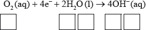
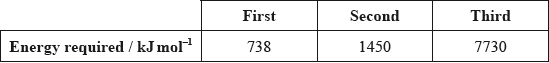

HL Paper 2
Esters and amides can be produced by condensation reactions.
Under certain conditions but-2-ene can react with water to form butan-2-ol.
State the names of two organic compounds required to produce ethyl methanoate and state suitable reaction conditions.
Deduce the structure of the simplest repeating unit of the polymer formed from the reaction between 1,6-diaminohexane and hexane-1,6-dioic acid and state one use of this product.
State and explain how the rate of step II would differ if 2-chlorobutane was used instead of 2-bromobutane.
Ethanol has many industrial uses.
State an equation for the formation of ethanol from ethene and the necessary reaction conditions.
Equation:
Conditions:
Define the term average bond enthalpy.
Ethanol can be used as a fuel. Determine the enthalpy of combustion of ethanol at 298 K, in \({\text{kJ}}\,{\text{mo}}{{\text{l}}^{ - {\text{1}}}}\), using the values in table 10 of the data booklet, assuming all reactants and products are gaseous.
Students can also measure the enthalpy of combustion of ethanol in the laboratory using calorimetry. Suggest the major source of systematic error in these procedures.
State the equation for the acid-catalysed reaction of ethanol with propanoic acid and state the name of the organic product.
Equation:
Name of the organic product:
A polyester can be formed when ethane-1,2-diol reacts with benzene-1,4-dicarboxylic acid.
Deduce the structure of the repeating unit and state the other product formed.
Repeating unit:
Other product:
State the type of polymerization that occurs.
The standard enthalpy change of combustion, \(\Delta H_{\text{c}}^\Theta \), of propanoic acid is \( - 1527{\text{ kJ}}\,{\text{mo}}{{\text{l}}^{ - 1}}\). Determine the standard enthalpy change of formation of propanoic acid, in \({\text{kJ}}\,{\text{mo}}{{\text{l}}^{ - 1}}\), using this information and data from table 12 of the data booklet.
Deduce, giving a reason, the sign of the standard entropy change of the system for the formation of propanoic acid from its elements.
Identify three allotropes of carbon and describe their structures.
Iron rusts in the presence of oxygen and water. Rusting is a redox process involving several steps that produces hydrated iron(III) oxide, \({\text{F}}{{\text{e}}_{\text{2}}}{{\text{O}}_{\text{3}}} \bullet {\text{n}}{{\text{H}}_{\text{2}}}{\text{O}}\), as the final product.
The half-equations involved for the first step of rusting are given below.
Half-equation 1: \({\text{Fe(s)}} \to {\text{F}}{{\text{e}}^{2 + }}{\text{(aq)}} + {\text{2}}{{\text{e}}^ - }\)
Half-equation 2: \({{\text{O}}_{\text{2}}}{\text{(aq)}} + {\text{4}}{{\text{e}}^ - } + {\text{2}}{{\text{H}}_{\text{2}}}{\text{O(l)}} \to {\text{4O}}{{\text{H}}^ - }{\text{(aq)}}\)
(i) Identify whether half-equation 1 represents oxidation or reduction, giving a reason for your answer.
(ii) Identify the oxidation number of each atom in the three species in half-equation 2.

(iii) Deduce the overall redox equation for the first step of rusting by combining half-equations 1 and 2.
(iv) Identify the reducing agent in the redox equation in part (iii).
The oxygen in half-equation 2 is atmospheric oxygen that is found dissolved in water in very small concentrations. Explain, in terms of intermolecular forces, why oxygen is not very soluble in water.
State the relationship between the electron arrangement of an element and its group and period in the periodic table.
Transition metals and their compounds often catalyse reactions. The catalyzed decomposition of hydrogen peroxide by CuO is an example. State two other examples of catalyzed reactions giving the transition metal or its compound acting as catalyst.
(i) State a chemical equation for the partial dissociation of water into ions, including state symbols.
(ii) The dissociation of water into ions is reversible. State the expression for the ionic product constant of water.
(iii) The ionic product constant of water was measured at three different temperatures.

Deduce whether the ionization of water is exothermic or endothermic, giving your reason.
(iv) Use the data in part (iii) to determine the pH of water at 373 K, correct to two decimal places.
(i) An aqueous solution of sodium chloride is electrolysed using inert electrodes. Explain which product is obtained at the positive electrode (anode) if the concentration of sodium chloride is high.
(ii) State the half-equations occurring at the electrodes during the electrolysis of the concentrated aqueous solution of sodium chloride.
Negative electrode (cathode):
Positive electrode (anode):
Describe how electrolysis can be used to electroplate a bracelet with a layer of silver metal. Include the choice of electrodes and electrolyte needed in your description.
Magnesium, a reactive metal found in many common minerals, is also an essential nutrient for both plants and animals.
Successive ionization energies of magnesium are given in the table below.

Magnesium metal is mainly used as a component in lightweight alloys, particularly in combination with aluminium and titanium.
Magnesium is usually produced by the electrolysis of molten magnesium chloride.
Define the term first ionization energy.
(i) Explain why the second ionization energy is greater than the first ionization energy.
(ii) Explain why the third ionization energy is much greater than the second ionization energy.
Although magnesium is usually found as \({\text{M}}{{\text{g}}^{2 + }}\) in its compounds, it is possible to use the Born-Haber cycle to investigate the possibility of \({\text{M}}{{\text{g}}^ + }\) being able to form stable compounds.
Use the ionization energy data from part (b), along with the other data provided below, to determine the enthalpy change of formation of MgCl(s). Assume that, because \({\text{M}}{{\text{g}}^ + }\) would be similar in size to \({\text{N}}{{\text{a}}^ + }\), MgCl would have a similar lattice enthalpy to NaCl.
Enthalpy of atomization of Mg \( + 146{\text{ kJ}}\,{\text{mo}}{{\text{l}}^{ - 1}}\)
Bond enthalpy in \({\text{C}}{{\text{l}}_{\text{2}}}\) \( + 243{\text{ kJ}}\,{\text{mo}}{{\text{l}}^{ - 1}}\)
Electron affinity of Cl \( + 349{\text{ kJ}}\,{\text{mo}}{{\text{l}}^{ - 1}}\)
Lattice enthalpy of NaCl \( + 790{\text{ kJ}}\,{\text{mo}}{{\text{l}}^{ - 1}}\)
Consider the lattice enthalpies of \({\text{Mg}}{{\text{F}}_{\text{2}}}\), \({\text{MgC}}{{\text{l}}_2}\) and \({\text{CaC}}{{\text{l}}_{\text{2}}}\). List these from the most endothermic to the least endothermic and explain your order.
\({\text{Most endothermic}} \to {\text{Least endothermic}}\)
Magnesium hydroxide, \({\text{Mg(OH}}{{\text{)}}_{\text{2}}}\), is only sparingly soluble in water and the equilibrium below exists when excess solid is in contact with a saturated solution.
\[{\text{Mg(OH}}{{\text{)}}_2}{\text{(s)}} \rightleftharpoons {\text{M}}{{\text{g}}^{2 + }}{\text{(aq)}} + {\text{2O}}{{\text{H}}^ - }{\text{(aq)}}\]
Outline how the solubility of magnesium hydroxide will vary with pH.
(i) Describe the bonding present in magnesium metal.
(ii) Suggest why magnesium is harder than sodium.
(iii) Outline why alloys are generally less malleable than their component metals.
(i) Draw a labelled diagram of a suitable apparatus for the electrolysis.
(ii) State equations for the reactions that take place at the electrodes.
Negative electrode (cathode) reaction:
Positive electrode (anode) reaction:
(iii) When dilute aqueous magnesium chloride is used as the electrolyte, the reactions at both electrodes are different. State equations for the reactions that occur in aqueous solution.
Negative electrode (cathode) reaction:
Positive electrode (anode) reaction:
(iv) Outline why magnesium metal is not produced in the electrolysis of aqueous magnesium chloride.
The rate of reaction is an important factor in industrial processes such as the Contact process to make sulfur trioxide, \({\text{S}}{{\text{O}}_{\text{3}}}{\text{(g)}}\).
Define the term rate of reaction.
Describe the collision theory.
The Contact process involves this homogeneous equilibrium:
\[{\text{2S}}{{\text{O}}_{\text{2}}}{\text{(g)}} + {{\text{O}}_{\text{2}}}{\text{(g)}} \rightleftharpoons {\text{2S}}{{\text{O}}_{\text{3}}}{\text{(g)}}\,\,\,\,\,\Delta H = - 198{\text{ kJ}}\]
State and explain how increasing the pressure of the reaction mixture affects the yield of \({\text{S}}{{\text{O}}_{\text{3}}}\).
The Contact process involves this homogeneous equilibrium:
\[{\text{2S}}{{\text{O}}_{\text{2}}}{\text{(g)}} + {{\text{O}}_{\text{2}}}{\text{(g)}} \rightleftharpoons {\text{2S}}{{\text{O}}_{\text{3}}}{\text{(g)}}\,\,\,\,\,\Delta H = - 198{\text{ kJ}}\]
2.00 mol of \({\text{S}}{{\text{O}}_{\text{2}}}{\text{(g)}}\) are mixed with 3.00 mol of \({{\text{O}}_{\text{2}}}{\text{(g)}}\) in a \({\text{1.00 d}}{{\text{m}}^{\text{3}}}\) container until equilibrium is reached. At equilibrium there are 0.80 mol of \({\text{S}}{{\text{O}}_{\text{3}}}{\text{(g)}}\).
Determine the equilibrium constant (\({K_{\text{c}}}\)) assuming all gases are at the same temperature and pressure.
The Contact process involves this homogeneous equilibrium:
\[{\text{2S}}{{\text{O}}_{\text{2}}}{\text{(g)}} + {{\text{O}}_{\text{2}}}{\text{(g)}} \rightleftharpoons {\text{2S}}{{\text{O}}_{\text{3}}}{\text{(g)}}\,\,\,\,\,\Delta H = - 198{\text{ kJ}}\]
State the effect of increasing temperature on the value of \({K_{\text{c}}}\) for this reaction.
Outline the economic importance of using a catalyst in the Contact process.